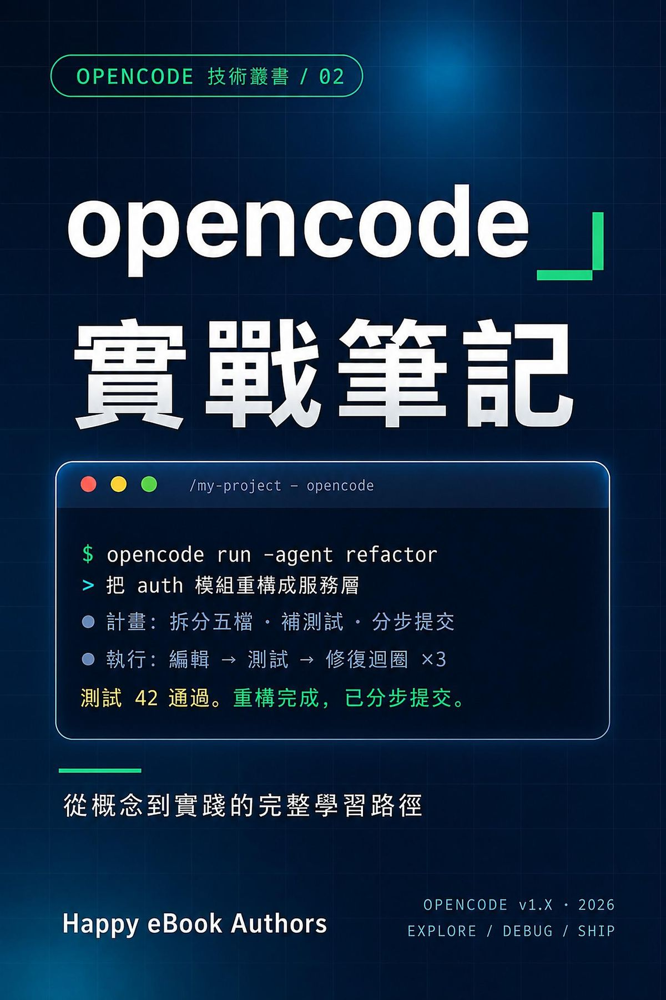

電子書
OpenCode 實戰筆記
「裝好了，然後呢？」——這本書回答所有 OpenCode 使用者的下一個問題

OpenCode 實戰筆記
「裝好了，然後呢？」——這本書回答所有 OpenCode 使用者的下一個問題
「裝好了，然後呢？」——這本書回答所有 OpenCode 使用者的下一個問題。 第一冊帶你入門；第二冊把你變成高手。五篇二十二個章節＋四篇附錄： ・概念篇：代理架構、工具迴圈、技能系統——理解它為何聰明 ・環境設定篇：AGENTS.md 與互動技巧——讓它讀懂你的專案 ・進階功能篇：LSP、MCP、會話工程、七層設定——釋放完整戰力 ・實戰應用篇：探索、功能開發、重構、除錯、Git 協作、團隊工作流六大場景 ・優化維護篇：成本矩陣、安全防護、問題排除——長期使用的護城河 所有指令基於 v1.18.21 實測驗證；除錯三假設法、重構雙安全網等方法論可直接複製到你的工作流。 適合已安裝完成、想從「能用」進階到「善用」的開發者。 OPENCODE 技術叢書 第二冊。